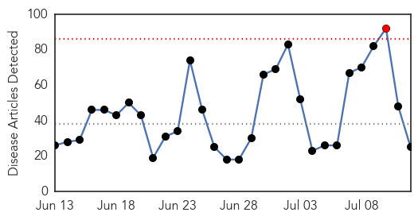

30 Day Trends
Web: 1 alerts, 0 warnings
Twitter: 1 alerts, 0 warnings
90 new deaths (11253 total)
325 new cases (27600 total)
Top Articles:
- 1.000
- Mission Unaccomplished: Containing Ebola in Africa
- 0.999
- Liberia confirms five fresh cases of Ebola
- 0.999
- The most from the coast
- 0.999
- Death toll in Ebola outbreak rises to 121
- 0.998
- Guinea's president on global aid push: 'Ebola forced us to change completely'
- 0.998
- Steps taken to ensure Ebola-free Haj
- 0.995
- EU pledges a‚450mn
- 0.995
- African nations seek billions for Ebola
- 0.991
- United Nations urges continued solidarity to help the Ebola-affected countries
- 0.991
- Gates Foundation Gives $50m For Ebola
- 0.989
- Ebola Crisis: Africa Needs More Home-Trained Doctors
- 0.981
- Some $3.2 billion needed for Ebola recovery efforts
- 0.980
- Very few drugs, trial sites in search for Ebola cure: WHO
- 0.975
- Koroma arrives home from UN to more bad news of mismanagement
- 0.972
- Effort to put Ebola-affected West Africa on path to recovery
- 0.970
- “Get to Zero, Stay at Zero” – The Comprehensive Plan to End Ebola
- 0.965
- Tests show Ebola in Liberia linked to virus found months ago
- 0.948
- The Single Greatest Mistake You Can Make When Investing in Biotech
- 0.947
- Amount Of Pledges For Ebola Recovery In West Africa
- 0.891
- Pledges Of $3.4 Billion For Ebola Recovery Made At United Nations
- 0.878
- At United Nations, pledge of $3.4 billion was made for Ebola recovery
- 0.645
- EU pledges 450-m euros to Ebola-affected countries
- 0.604
- Writing about a fictional virus when you're a deskbound novelist
- 0.600
- Study finds donor funds fall short for key global health functions
- 0.534
- No plans to stop Liberia flights
Top Tweets:
- 0.964
- Genetic Tests Prove New Ebola Virus In Liberia Very Similar To First Outbreak - Tech Times http://t.co/NeNC34uzgM ebola EVD
- 0.801
- Genetic Tests Prove New Ebola Virus In Liberia Very Similar To First Outbreak ... - Tech Times http://t.co/6R3v7Ba9OA
- 0.770
- $3.4 Billion: Amount Of Pledges For Ebola Recovery In West Africa - Tech Times http://t.co/LAiWD0tMDb ebola EVD
- 0.554
- Liberians struggle to identify Ebola - Healio http://t.co/PimQnzuh9b ebola EVD
Web/News Articles
Tweets

Human Impact
Article Locations

Article Confidences